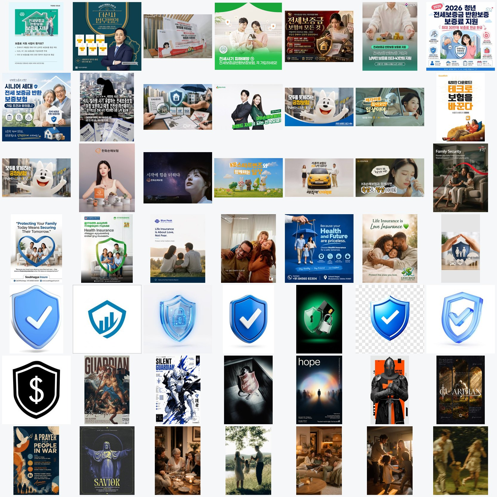
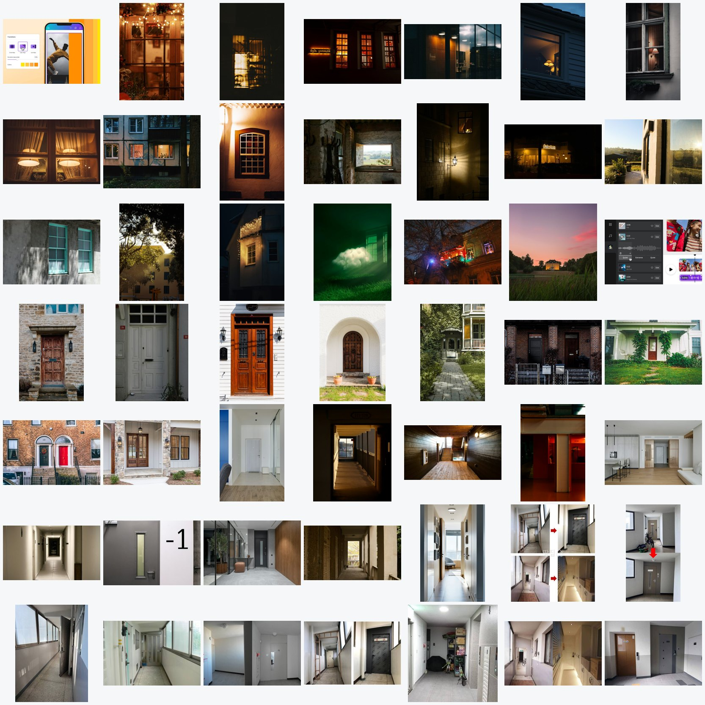
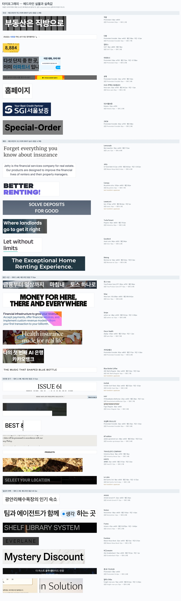
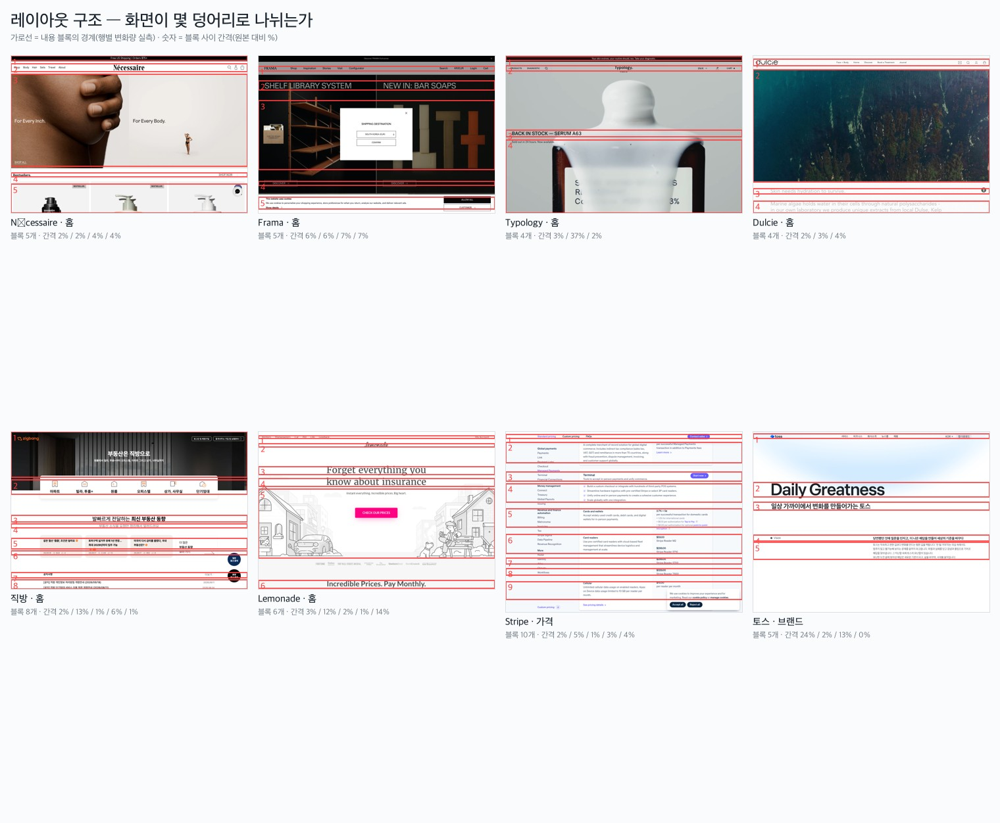

다섯 단계로 어떻게 갔나
시안부터 그리지 않았다. 클라이언트는 이미 브랜드북 458줄·사업설명서 1,035줄·BI 가이드 22쪽을 갖고 있었고, 대표 본인이 “문서가 계속 커지고 대표 자신도 따라가기 벅찬 상태”라고 썼다. 부족한 것은 문서가 아니라 판단 기준이었다.
| 단계 | 한 일 | 도구 | 남은 것 |
|---|---|---|---|
| ① 생각(가설) | 백지에서 다시 묻기. 은유 → 행동 프레임 | ChatGPT | 살핌–발견–준비–지원 |
| ② 수집 | 이미지 939장 · 기업 41곳 · 경쟁 16곳 · 단행본 1권 | Claude Code | 컨택트시트 · 실측표 · 근원 3층 |
| ③ 정리 | 측정과 추정 분리 · 출처 검증 | Claude Code | 인용 명세서 · 게이트 10개 |
| ④ 전략 | 시장에서 우리 자리 찾기 | Claude Code | 포지셔닝 축 · 색 진단 · 보고서 |
| ⑤ 시각화 | 시안 v0.1 → v0.8 | ChatGPT image_gen | 3컨셉 × 7페이지 |
① 은유에서 행동으로
AI가 물었다. “안심은 셋 중 무엇입니까 — 보호막 안의 안심 / 누가 보고 있다는 안심 / 평범한 일상을 살 수 있다는 안심?”
진현 · 9/18 23:33전문가가 전체 여정을 보면서 케어해주는 느낌. 아이가 뒤뚱뒤뚱 걸어서 넘어져도 다시 일으켜 세워주는 따뜻한 엄마느낌이 하나이고 (…) 3가지가 종합적으로 접근되는 느낌이면 좋겠음.
그런데 ‘엄마’를 광고에 그대로 쓰면 고객이 아이가 된다. 그래서 행동으로 번역했다. 그리고 2분 뒤, 문장 하나를 직접 고쳤다.
진현 · 23:35→ 문제가 생기면 필요한 순간에 개입한다 → 이것보다 문제가 생길 수 있는 변동상황이 발생하면 미리 알리고 어떻게 준비 해야 하는지 전달한다.
이 한 줄이 브랜드를 사후 대응에서 사전 예방으로 옮겼다. 결과는 「살핌 → 발견 → 준비 → 지원」. 사흘간 한 번도 안 바뀐 유일한 구조이고, 마지막 시안 v0.8의 7페이지 구성도 이 위에 서 있다.
② 수집 — 언어를 바꾸자 다른 세계가 나왔다


| 영어 검색 | 한국어 검색 |
|---|---|
| 목재 현관문, 포치, 화분, 웰컴 매트 | 철문, 도어록, 형광등, 타일 바닥 |
| 따뜻한 텅스텐 조명 | 차가운 형광등 |
| 잔디·정원 | 자전거·우편함·소화전 |
여기서 원리가 나왔다. 따뜻함을 공간에서 찾지 말고 빛에서 찾는다. 한국 임차 주거의 공간은 좁고 중성적이다. 따뜻함은 인테리어가 아니라 문 안쪽에서 새어 나오는 빛에 있다.
기업 41곳은 눈이 아니라 자로 쟀다



| 국내 | 해외 | |
|---|---|---|
| 제목 글자 크기 | 35.4px | 66.5px |
| 제목 ÷ 본문 (위계) | 2.3배 | 4.7배 |
| 화면당 정보 덩어리 | 6.4개 | 6.3개 |
| 덩어리 간격 | 4.9% | 8.0% |
| 사진 수 | 8.4장 | 2.1장 |
정보량은 같다. 국내 화면이 답답한 이유는 내용이 많아서가 아니라 크기와 간격이었다.
③ AI가 자기 결과를 버렸다
처음엔 웹사이트 첫 화면에서 픽셀을 뽑아 색을 분석했다. 결과가 전부 어둡고 칙칙했다. 원인은 방법에 있었다 — 첫 화면 대부분이 사진이라 브랜드 색이 아니라 사진의 평균색을 뽑고 있었다. 분석을 버리고 층을 올렸다.
| 층 | 성격 | 거기서 나온 사실 |
|---|---|---|
| 운영 웹사이트 | 마모됨. 프로모션이 덮고 있다 | — |
| 제작 스튜디오 사례 | 자기 홍보 | Wise가 핀테크 파랑을 버린 이유 |
| 공식 가이드 문서 | 정본 | 토스 공식 2색 · 카카오뱅크 로고색 검정 하나 |
④ 클라이언트의 전제가 틀렸다
브랜드북에 “사고 전부터 작동하는 유일한 주거 케어”라는 문장이 있었다. 아무도 확인한 적이 없어서 16곳을 조사했다. 결과는 「아니오」였다.
| 서비스 | 하는 일 | 비용 |
|---|---|---|
| HUG 안심전세앱 (2026.9 개편) | 주소만 넣으면 위험도 분석 · 등기 변동 알림 2년 6개월 | 무료 |
| 경기도 안심 부동산 (2026.9.15) | 계약 전 권리분석 · 24시간 등기 감시 | 무료 |
| 체크팀 | 등기 알림 + 권리분석 | 월 1,100원 |
임차in케어 출시는 10월이다. 정부가 한 달 먼저, 공짜로 시작했다. 그런데 세 층으로 자르니 빈자리가 보였다.
| 층 | 지금 누가 하나 |
|---|---|
| 감시 — 계속 본다 | 공공이 무료로 포화 |
| 판단 — 뭘 할지 알려준다 | 공공이 무료로 포화 |
| 실행 — 대신 처리한다 | 전부 사고가 난 뒤에만 열린다 |
셋을 잇는 곳이 없었다. 차별점은 기능이 아니라 연결에 있다.


{kind=link}
{kind=link}